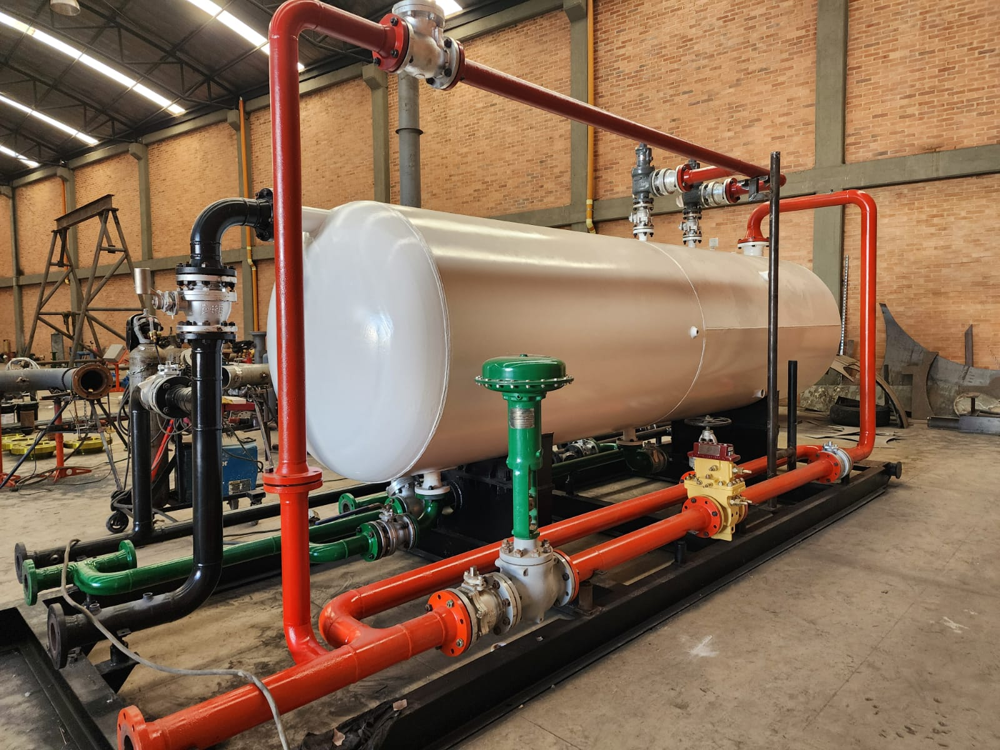

Separadores de crudo
El Separador de Crudo es un equipo clave en la industria petrolera, diseñado para separar eficazmente los componentes del petróleo crudo en sus fases líquidas y gaseosas. Su función principal es dividir el petróleo, el gas natural, el agua y los sedimentos que se extraen del subsuelo, permitiendo el procesamiento adecuado de cada uno de estos elementos.
Más información